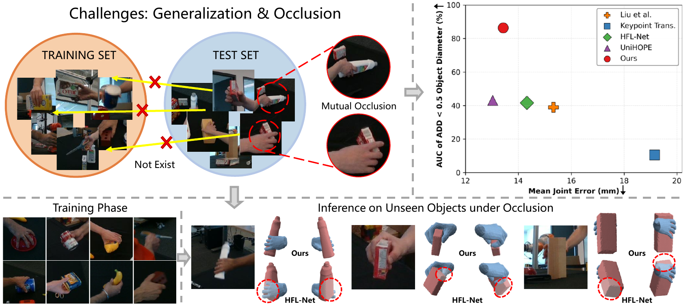

GenHOI: Generalized Hand-Object Pose Estimation with Occlusion Awareness
European Conference on Computer Vision (ECCV), 2026
GenHOI is an occlusion-aware framework for generalized 3D hand-object pose estimation that integrates hierarchical semantic knowledge with hand priors to generalize to unseen objects and novel interactions.